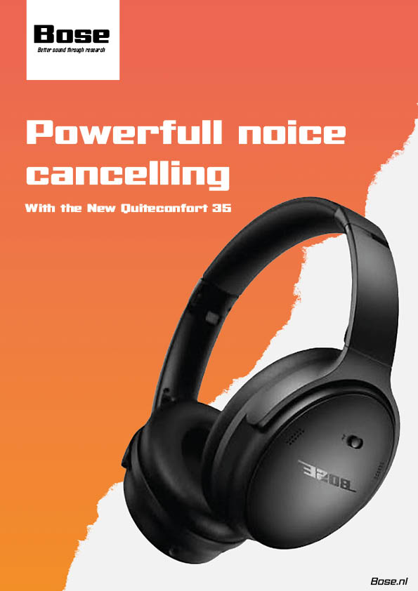
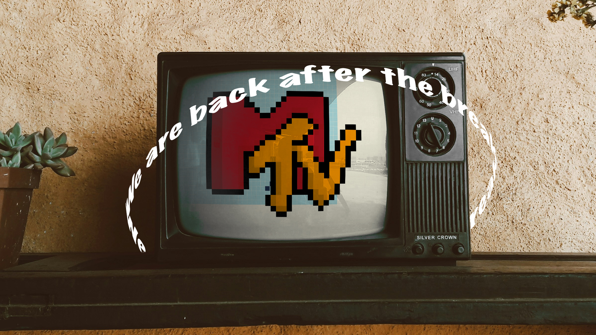
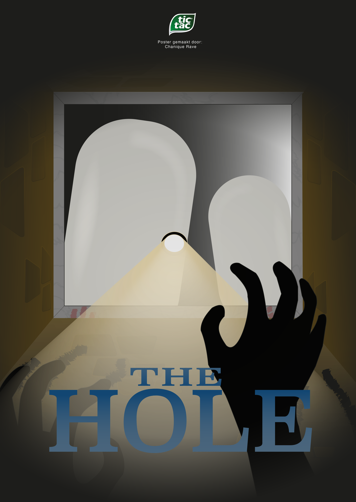

Studie Mediavormgever
Hieronder vind je een overzicht van mijn grafische werk, animatie en audiovisueel werk. Van de afgelopen 2 jaar.
Grafisch
Poster
Elke poster heeft een unieke uitwerking, door wat af te tasten van andere ontwerpers. Maar naast het aftasten, bedacht ik zelf ook grappige uitingen. Zoals de valentijns inhaker voor Schoonenberg
Deze inhaker wordt niet gebruikt en of gepromoot door schoonenberg.

Logo's
Voor verschillende grafisch opdrachten moest ik een logo maken van een stad naar keuze. Ik heb mijn focus gelegd op berlijn en de geschiedenis.
Ik heb een citybranding ontwikkeld/ herdesignd voor berlijn, zodat de geschiedenis mooi in het licht komt. Ik heb met dit logo gebruik gemaakt van diapostieve kleuren en een enkele kleur, hieruit heb 8 varianten gemaakt in diapositieve kleuren en de binnenvulling leeg.
De tweede logo ontwerp wat ik heb gemaakt is voor de Berlin dom, hier heb ik gespeeld met de B en de D. Ook heb ik gebruik gemaakt van de dom zelf, om er wat unieks van te maken, zonder dat het direct opvalt dat de cathedral erin verwerkt is.
Grafische werk | Overzicht
Hieronder vind je een overzicht van mijn grafische werk. van de afgelopen 2 jaar.






Audiovisueel
In de afgelopen jaren heb ik met volle enthousiasme gewerkt aan audiovisuele projecten, waarbij ik de combinatie van beeld en geluid beter heb leren kennen. Ik heb dingen mogen leren op het gebied van mixed media, zoals het werken in premiere en after effects, voor een lowerthird. Maar ook op het gebied van belichtingen en kaders.
Animatie
Animatie is vrij breed, van 2D tot 3D animatie. Maar het is ook mooi om mixedmedia uitingen mee te maken.
Hieronder vind je een overzicht van mijn animatie werk. van 2D mixedmedia, tot 3D animatie via blender.